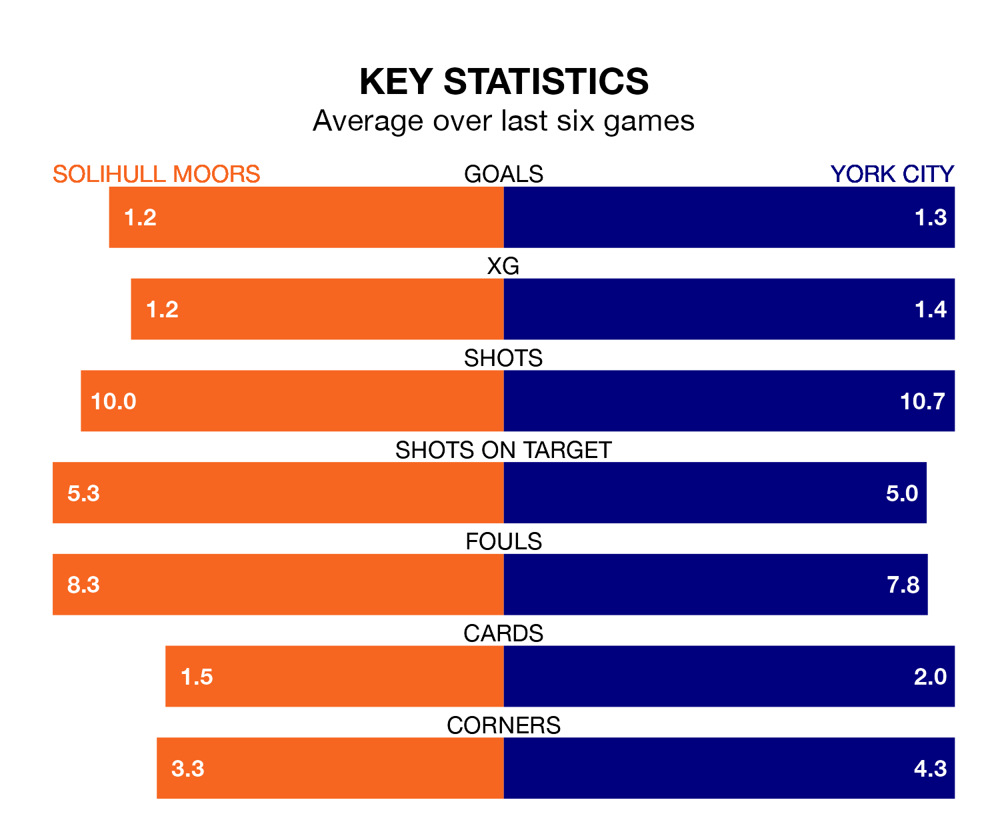

Solihull Moors host York City on Saturday at the ARMCO Arena in the National League.
In their last league match, on April 13, Solihull Moors lost to Bromley 3-0 away.
York won, 2-0 at home against Woking, with Billy Chadwick and Dipo Akinyemi on the scoresheet.
With 55 goals in 45 games so far this season, York are scoring at below the league average rate with 1.2 goals per game. And they are conceding at an average rate, letting in 68 goals at a rate of 1.5 per game.
Solihull Moors, meanwhile, are above average scorers, with 1.6 goals per game, compared to a league average of 1.5. They have conceded 1.4 goals per game.
The Moors are sixth in the table after 45 games, of which they have won 20 and drawn 13, earning 73 points.
City are 11 places behind the hosts in 17th, with 12 wins and 17 draws putting them on 53 points.
Solihull Moors are in mixed form in the National League, with two wins and two draws from their last six games.
With four wins and a draw over that period, the away team's form is better – they have taken 13 points from 18, compared to Solihull Moors's eight.
In the last three years, Solihull Moors and York have played each other on three occasions. Solihull Moors won one of them and they drew the other.
Their last meeting was on September 30, when they played out a 2-2 draw.
Updated: 15:40 (UTC), 18/04/24